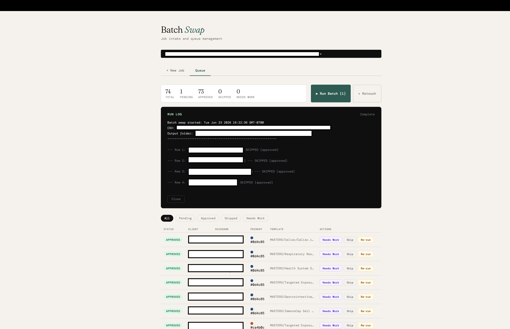

Automation workbench for batch production 面向批量生产的自动化工作台
A local pipeline for batch update, retouch, and logging, scoped down from an over-ambitious agent design into something deterministic that ships stable, quality work every cycle. 一条本地流水线，做批量更新、retouch 和日志记录。它从一个太想一步到位的 agent 方案，收敛成一套确定、可控的做法，每一轮都能稳定交付有质量的成品。

Every cycle of updating Adobe InDesign marketing templates per brand client burned 10–20 hours. The kind of labor that scales linearly with volume and never gets better.
每一轮根据品牌客户更新对应的 Adobe InDesign 营销材料模版，都要烧掉 10–20 小时。这种活会随着量线性增长，而且永远不会变轻松。
I started ambitious: Adobe MCP + an agent to handle placing brand logos and updating the color system on their own. On the unstructured legacy files it fell apart: wrong scaling, and an agent that wouldn't terminate. The autonomy was the wrong tool for messy input.
我一开始想得很大：用 Adobe MCP + agent，让它自己处理放置品牌 logo、颜色系统更新。但一碰上无结构的历史文件就崩了：缩放出错，agent 还停不下来。对杂乱的输入来说，「自治」就是用错了工具。
I tightened the scope hard: clearly labeled layers, scripts, and a workbench for batch update, retouch, and logging. The scripting is the core, deterministic, inspectable, and stable enough to deliver quality work every run, with a human-QA gate kept by design.
我把范围收得很紧：清晰分层标注、脚本，再加一个做批量更新、retouch、日志的工作台。脚本才是核心：确定、可检查，稳到每一轮都能交出有质量的活，并且刻意留着人工 QA 这道关。
The lesson is the asset: structure the input before you reach for autonomy. AI belongs at the structured edges; deterministic scripts own the core; an agent only earns a seat where it provably terminates. I also left RAG out on purpose: with only 30–50 brand files, retrieval adds cost and zero signal. Matching the tool to the input is the actual skill.
真正的资产是这条经验：在伸手要「自治」之前，先把输入结构化。AI 用在结构化的边缘，确定性脚本守住核心，agent 只有在「能停下来」的地方才配有一席。我也故意没上 RAG：只有 30–50 个品牌文件，检索只会徒增成本、毫无收益。让工具匹配输入，才是真正的本事。
10–20 hrs → under 1 hr per cycle, and more importantly, repeatable. The loop runs in production without surprises.
每轮 10–20 小时 → 1 小时以内；更重要的是，可重复。整条链路在生产里跑，不出意外。
Killing my own runaway agent taught me more than shipping it would have. The discipline (scope down until it's stable, then expand from a base you trust) is the thing I'd bring on day one.
亲手砍掉自己那个停不下来的 agent，比硬把它推上线，让我学到的更多。先收到够稳，再从一个你信得过的底座往外扩，这种纪律，是我第一天就能带进团队的。
Next stage a skill that fetches upstream brand assets as structured JSON, plus MCP into ClickUp for agile tracking. AI re-enters where the input is finally structured enough to trust it. 下一步 做一个把上游品牌资产抓成结构化 JSON 的 skill，再用 MCP 接进 ClickUp 做敏捷管理：等输入终于结构化到可以信任，AI 再回到流程里。My role sole designer-builder, defined the architecture, wrote the scripts, kept a human-QA gate by design. 我的角色 独立设计 + 构建：定义架构、编写脚本，并刻意保留人工 QA 这道关卡。